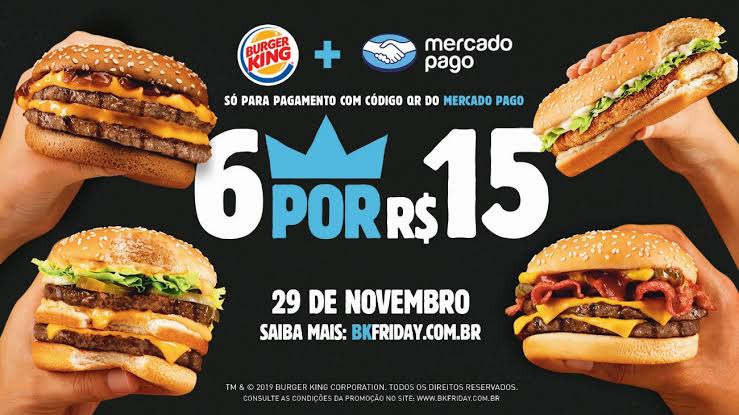

HOME
QUEM SOMOS
ANUNCIE AQUI
CONTATO
PUBLICIDADE 728PX x 90PX
HOME
ECONOMIA
ENTRETERIMENTO
Item1
Item2
Item3
ESPORTES
GERAL
Item1
Item2
Item3
NOTÍCIAS
POLÍCIA
Item1
Item2
Item3
VÍDEOS
ÚLTIMAS NOTÍCIAS
Jogos baseados em 'Jurassic Park' e 'Toy Story' estão entre os destaques do mês.
Saída de Kojima
Após toda a novela da saída de Kojima da Konami, Imaizumi deixou a companhia para ajudar a fundar a nova e independente Kojima Productions.
Saída de Kojima
Após toda a novela da saída de Kojima da Konami, Imaizumi deixou a companhia para ajudar a fundar a nova e independente Kojima Productions.
Saída de Kojima
Após toda a novela da saída de Kojima da Konami, Imaizumi deixou a companhia para ajudar a fundar a nova e independente Kojima Productions.
Saída de Kojima
Após toda a novela da saída de Kojima da Konami, Imaizumi deixou a companhia para ajudar a fundar a nova e independente Kojima Productions.
SOCIAL
ULTIMAS NOTÍCIAS
De acordo com Karla Crosara, superintendente executiva da Agência Nacional de Telecomunicações (Anatel), o edital do 5G aguarda votação no conselho diretor da agência, o que deve ocorrer ainda neste ano. Crosara garantiu que o edital terá instrumentos para massificar a banda larga no Brasil, com compromissos de abrangência em localidades que hoje não têm 4G. Segundo ela, mais de 65% dos municípios do país já utilizam a tecnologia 4G, mas localidades fora das principais sedes ainda usam o 3G.
De acordo com Karla Crosara, superintendente executiva da Agência Nacional de Telecomunicações (Anatel), o edital do 5G aguarda votação no conselho diretor da agência, o que deve ocorrer ainda neste ano. Crosara garantiu que o edital terá instrumentos para massificar a banda larga no Brasil, com compromissos de abrangência em localidades que hoje não têm 4G. Segundo ela, mais de 65% dos municípios do país já utilizam a tecnologia 4G, mas localidades fora das principais sedes ainda usam o 3G.
De acordo com Karla Crosara, superintendente executiva da Agência Nacional de Telecomunicações (Anatel), o edital do 5G aguarda votação no conselho diretor da agência, o que deve ocorrer ainda neste ano. Crosara garantiu que o edital terá instrumentos para massificar a banda larga no Brasil, com compromissos de abrangência em localidades que hoje não têm 4G. Segundo ela, mais de 65% dos municípios do país já utilizam a tecnologia 4G, mas localidades fora das principais sedes ainda usam o 3G.
PUBLICIDADE

ENCONTRE NO FACEBOOK
CROK TOP